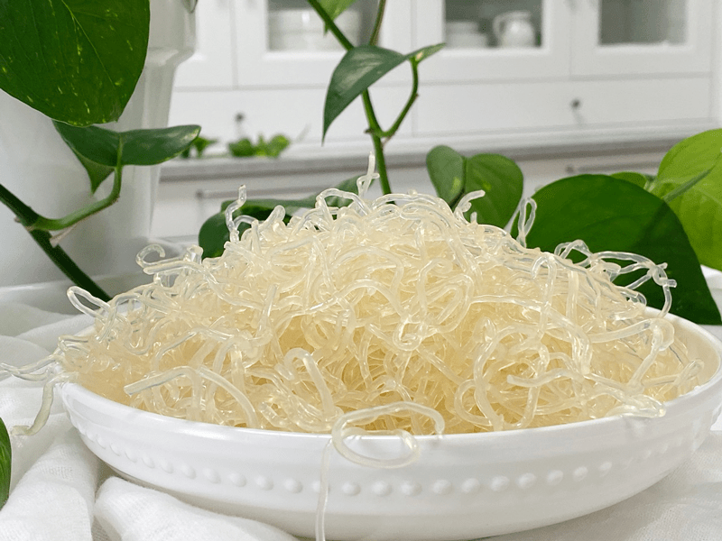
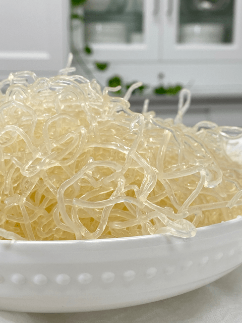

Kelp Noodles
Kelp Noodles by Sea Tangle can sometimes be hard to find in your local grocery stores. It depends on where you live, but you never know, I have seen an increase of these popping up. I often find mine at WholeFoods, online, and in nutrition stores.

Sea Vegetable
Kelp Noodles are a sea vegetable in the form of an easy to eat raw noodle. Made of only kelp (a sea vegetable), sodium alginate (sodium salt extracted from a brown seaweed), and water.
- Kelp Noodles are fat-free, gluten-free, and very low in carbohydrates and calories.
- Their noodle form and neutral taste allow for a variety of uses including salads, stir-fries, broths, and casseroles, while their healthful content provides a rich source of trace minerals including iodine, which kelp is well known for.
- Their unique texture completes the package, making Kelp Noodles a one-of-a-kind healthful and tasty alternative to pasta and rice noodles. Best of all, no cooking is required. Just rinse and add the noodles to any dish, and they are ready to eat!
- The kelp noodles are shelf-stable in the package for up to six months, so stock up and save. Please refrigerate after opening.
- Kelp noodles are made from seaweed and contain virtually no starches and only six calories per serving.
-
Kelp noodles have a neutral flavor, meaning they pick up whatever flavors you use with them — salty, tangy, or even sweet.
-
These kelp noodles offer fantastic support for those looking to control their weight or blood sugar levels. Because kelp noodles have virtually no calories and contain only 1 gram of carbohydrate per serving, they can be part of a healthy plan for sensible weight control and blood sugar control.
- Sea Triangle brand, kelp noodles are raw food. They do not undergo any heating over 100 degrees Fahrenheit.
What are they made from?
Water, kelp, sodium alginate.
(Sodium alginate is a sodium salt derived from brown seaweed. It is known to help remove heavy metals from your body.)

Nutritional Facts:
Serving Size 4 oz:
- Calories 6, Calories from fat 0
- Total fat 0 g, (0% DV)
- Sodium 35 mg (1% DV)
- Total Carbohydrate 1 g (0% DV)
- Dietary Fiber 1g (4% DV)
- Sugars 0 g
- Protein 0g (0% DV)
- Percent Daily Values (DV) are based on a 2,000 calorie diet. Calcium 15%, Iron 4%,
To Soften the Noodles:
- Soften with baking soda – Rinse the noodles, place in a glass bowl and cover with warm water. Add 1 Tbsp (per bag) to the noodles and stir to help disperse the baking soda. Soak for 15-30 minutes. Drain and rinse thoroughly, cut to the desired length, and set aside.
- Soften on the countertop – Rinse the noodles and place them in a bowl. Add enough water to cover the noodles, add lemon juice and salt. Cover and allow them to soak overnight on the counter. When ready to use, rinse, and serve.
- Soften in the dehydrator – Rinse the noodles and place them in a bowl. Add enough water to cover the noodles, add lemon juice and salt. Place the bowl in the dehydrator and warm the noodles at 115 degrees (F) overnight or 145 degrees (F) for a few hours.
- Soften in Braggs Aminos, Tamari, or your desired “soy sauce” – Rinse noodles and place in a bowl. Toss in your soy sauce and allow it to marinate for a few hours or overnight.
© AmieSue.com